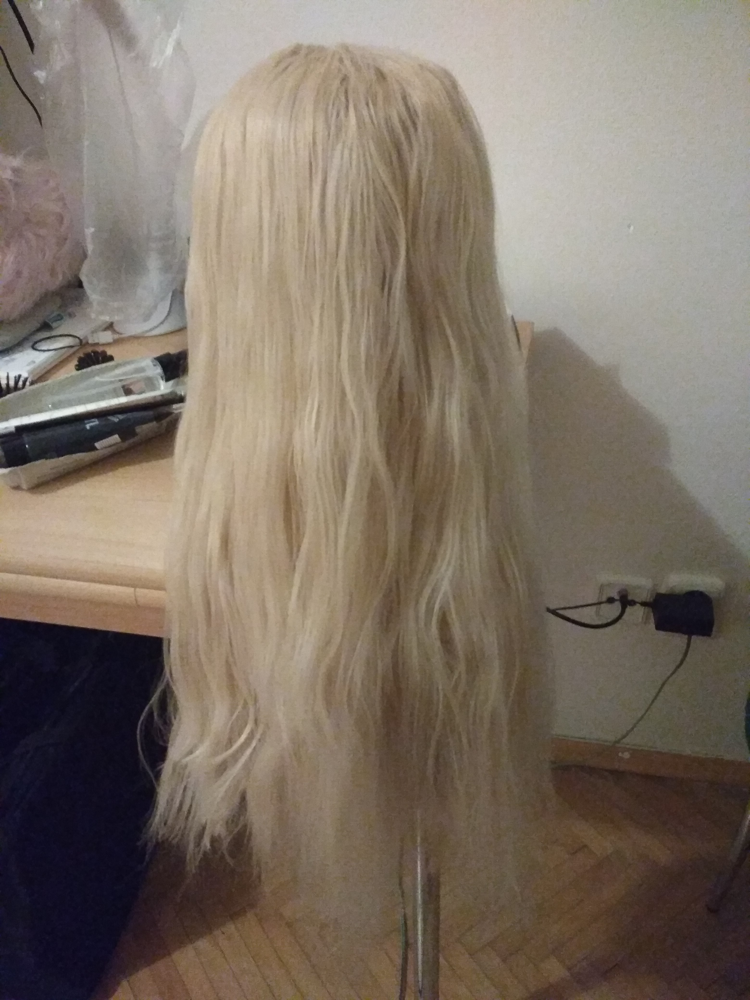
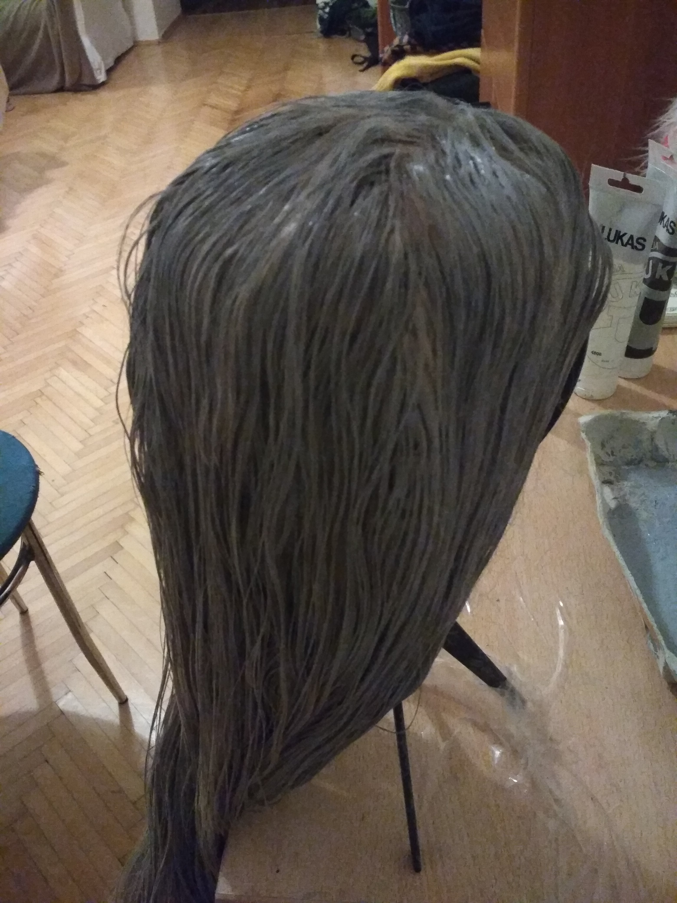
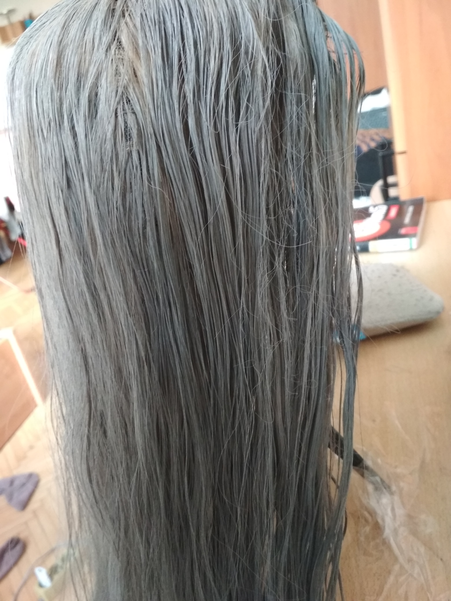

May 13, 2019
Ne vždy má cosplayer přirozenou délku nebo i barvu vlasů pro vytvoření zvoleného charakteru. To se dá, ale velmi jednoduše dohnat za pomocí paruky. Na trhu existují paruky všemožných barev, hustot a délek. Výběr vysněné paruky může, ale velmi zasáhnout do našich financí. My vám chceme tedy ukázat způsob jak si vytvořit paruku potřebné barvy a nezruinovat si při tom peněženku.
Paruka – nejlépe blond (čím světlejší, tím lepší), kvalitu necháme na vás, ¨ ale výhodou akrylových barev je to, že paruku zbaví nepřirozeného lesku, takže i levná paruka za pár korun nebude vypadat dobře
Akrylová barva – odstín i značka barvy je plně na vás, akrylovou barvu většinou najdete v každých výtvarných potřebách nebo v papírnictví
Rozprašovač s vodou – super pomocník pro lepší vsakování barvy do vlasů
  